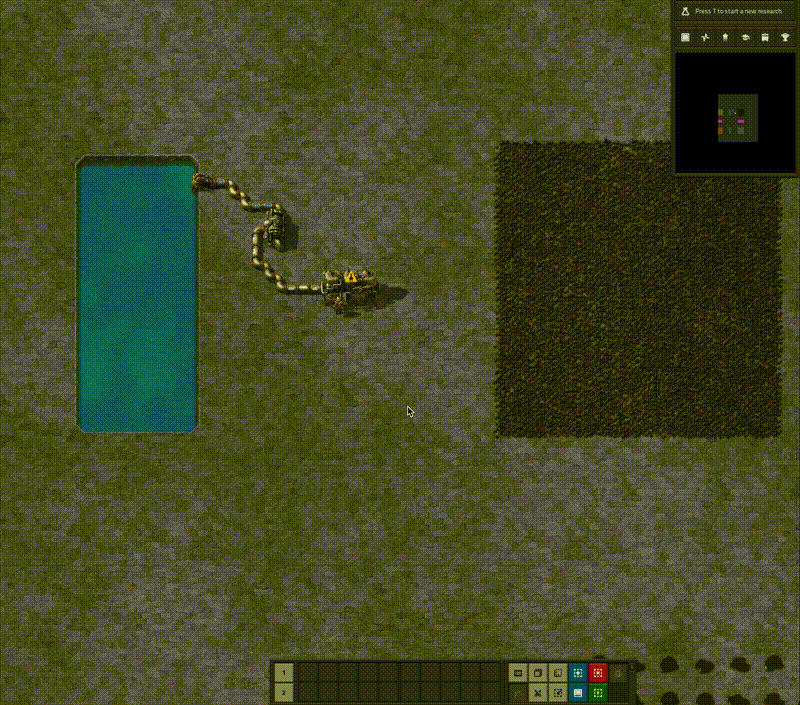
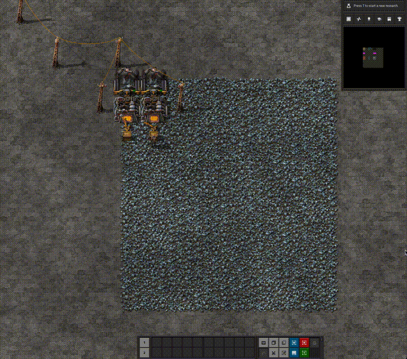
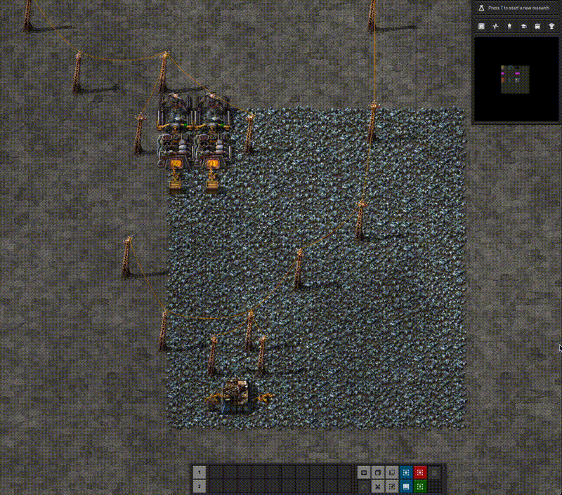
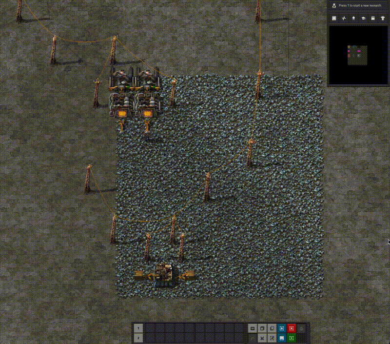
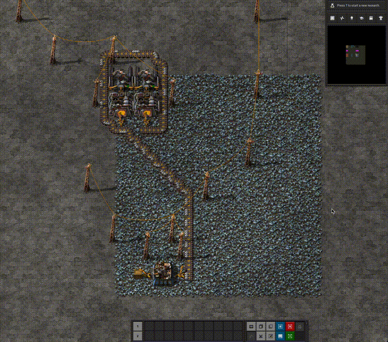

Environment Dynamics and Trajectory Example
Illustrative example of an agent building an automatic iron gear wheel factory. The agent iteratively debugs and refines its factory design through programmatic interaction with the game environment.
Initial Mining Setup
The agent sets up electric mining drills on an iron ore patch and connects them to electric furnaces for automated iron plate production.
🎮 Game State (Before)
🎬 Game State (After)

⚡ Action Program
# Find iron ore and setup mining
iron_pos = nearest(Resource.IronOre)
print(f"Found iron ore at {iron_pos}")
steam_engine = get_entity(Prototype.SteamEngine, Position(x=2.5, y=8.5))
# Create mining area - need 2 electric mining drills for enough iron throughput
# Iron gear wheels need 2 iron plates each, and we need 16 per minute
# So we need 32 iron plates per minute
# Electric mining drill mines 30 ore per 60 seconds, so 2 drills = 60 ore/min
drill_area_box = BuildingBox(
width=2 * Prototype.ElectricMiningDrill.WIDTH + 2,
height=Prototype.ElectricMiningDrill.HEIGHT + Prototype.ElectricFurnace.HEIGHT + 4
)
drill_coords = nearest_buildable(Prototype.ElectricMiningDrill, drill_area_box, iron_pos)
print(f"Found buildable area for drills at {drill_coords.center}")
move_to(drill_coords.left_top)
# Place 2 electric mining drills
drills = []
for i in range(2):
drill_pos = Position(x=drill_coords.left_top.x + Prototype.ElectricMiningDrill.WIDTH * i, y=drill_coords.left_top.y)
drill = place_entity(Prototype.ElectricMiningDrill, position=drill_pos, direction=Direction.DOWN)
drills.append(drill)
# Place furnace below each drill
furnace = place_entity_next_to(Prototype.ElectricFurnace, drill.position, direction=Direction.DOWN)
# Connect to power
connect_entities(steam_engine, drill, Prototype.MediumElectricPole)
connect_entities(steam_engine, furnace, Prototype.MediumElectricPole)Assembling Machine Setup
The agent places an assembler to create iron gear wheels in the vicinity of the mining setup and hooks it up to power while the mining operation collects iron plates in chests.
🎮 Game State (Before)
🎬 Game State (After)
⚡ Action Program
# Need to place assembling machines away from the mining area
# Iron gear wheels need 2 iron plates each, and we need 16 per minute
# Assembling machine 2 crafts 90 iron gear wheels per 60 seconds, so 1 machine is enough
# Find a position away from the mining setup (at least 20 tiles away)
assembly_position = Position(x=15.5, y=90.0) # 20+ tiles south of furnaces
# Define building area for assembler with space for inserters
assembly_box = BuildingBox(
width=Prototype.AssemblingMachine2.WIDTH + 2 * Prototype.Inserter.WIDTH + 4,
height=Prototype.AssemblingMachine2.HEIGHT + 4
)
assembly_coords = nearest_buildable(Prototype.AssemblingMachine2, assembly_box, assembly_position)
# Place assembling machine
move_to(assembly_coords.center)
assembler = place_entity(Prototype.AssemblingMachine2, position=assembly_coords.center, direction=Direction.DOWN)
print(f"Placed assembling machine at {assembler.position}")
# Set recipe to iron gear wheels
assembler = set_entity_recipe(assembler, Prototype.IronGearWheel)
print(f"Set recipe to iron gear wheels")
# Connect assembler to power
steam_engine = get_entity(Prototype.SteamEngine, Position(x=2.5, y=8.5))
poles = connect_entities(steam_engine, assembler, Prototype.MediumElectricPole)
print(f"Connected assembler to power network")
# Place input inserter on the right side
input_inserter = place_entity_next_to(Prototype.Inserter, assembler.position, direction=Direction.RIGHT, spacing=0)
input_inserter = rotate_entity(input_inserter, Direction.LEFT)
print(f"Placed input inserter at {input_inserter.position}")
# Place output inserter on the left side
output_inserter = place_entity_next_to(Prototype.Inserter, assembler.position, direction=Direction.LEFT, spacing=0)
print(f"Placed output inserter at {output_inserter.position}")
# Connect inserters to power
poles = connect_entities(steam_engine, input_inserter, Prototype.MediumElectricPole)
poles = connect_entities(steam_engine, output_inserter, Prototype.MediumElectricPole)
print(f"Connected inserters to power")Attempting to Connect Mining to Assembler
After trying to directly connect the mining output inserters to the assembler, the agent realizes that the chests are blocking the belts and removes them. This program below again produces an error because the agent did not also remove the chest being used as an input buffer at the assembler.
🎮 Game State (Before)
🎬 Game State (After)
⚡ Action Program
# Let me remove the iron plate storage chests and connect belts directly from furnace inserters
# First, pickup the chests that are blocking
chest1 = get_entity(Prototype.WoodenChest, Position(x=15.5, y=76.5))
chest2 = get_entity(Prototype.WoodenChest, Position(x=18.5, y=76.5))
# Extract iron plates from chests before removing them
move_to(chest1.position)
extracted1 = extract_item(Prototype.IronPlate, chest1, quantity=351)
print(f"Extracted {extracted1} iron plates from chest 1")
move_to(chest2.position)
extracted2 = extract_item(Prototype.IronPlate, chest2, quantity=351)
print(f"Extracted {extracted2} iron plates from chest 2")
# Pickup the chests
pickup_entity(chest1)
print(f"Removed chest at {chest1.position}")
pickup_entity(chest2)
print(f"Removed chest at {chest2.position}")
# Now connect the furnace output inserters to the assembler input inserter with belts
output_inserter1 = get_entity(Prototype.Inserter, Position(x=15.5, y=75.5))
output_inserter2 = get_entity(Prototype.Inserter, Position(x=18.5, y=75.5))
assembler_input_inserter = get_entity(Prototype.Inserter, Position(x=22.5, y=93.5))
# Connect first inserter to assembler input
belts1 = connect_entities(
output_inserter1,
assembler_input_inserter,
Prototype.TransportBelt
)
print(f"Connected first furnace output to assembler input: {belts1}")
# Connect second inserter to main belt
belts2 = connect_entities(
output_inserter2,
belts1,
Prototype.TransportBelt
)
print(f"Connected second furnace output to belt line: {belts2}")Final Success
The agent removes the problematic input buffer chest and connects the transport belt-based logistics network from miner to assembler, resulting in an automated iron gear wheel system which achieves the target throughput.
🎮 Game State (Before)
🎬 Game State (After)
⚡ Action Program
# The assembler input chest is also blocking. Let me remove it too and rethink the setup
# I need to place belts first, then the input chest on the belt line
# Remove the assembler input chest
assembler_input_chest = get_entity(Prototype.WoodenChest, Position(x=23.5, y=93.5))
move_to(assembler_input_chest.position)
pickup_entity(assembler_input_chest)
print(f"Removed input chest at {assembler_input_chest.position}")
# Now connect the furnace output inserters to the assembler input inserter with belts
output_inserter1 = get_entity(Prototype.Inserter, Position(x=15.5, y=75.5))
output_inserter2 = get_entity(Prototype.Inserter, Position(x=18.5, y=75.5))
assembler_input_inserter = get_entity(Prototype.Inserter, Position(x=22.5, y=93.5))
print(f"Connecting from inserter 1 at {output_inserter1.position} to assembler input at {assembler_input_inserter.position}")
# Connect first inserter to assembler input
belts1 = connect_entities(
output_inserter1,
assembler_input_inserter,
Prototype.TransportBelt
)
print(f"Connected first furnace output to assembler input: {belts1}")
# Connect second inserter to main belt
belts2 = connect_entities(
output_inserter2,
belts1,
Prototype.TransportBelt
)
print(f"Connected second furnace output to belt line: {belts2}")
# Refuel boiler
boiler = get_entity(Prototype.Boiler, Position(x=-4.0, y=3.5))
move_to(boiler.position)
boiler = insert_item(Prototype.Coal, boiler, quantity=30)
print(f"Refueled boiler")
print("Belt connections complete - waiting for iron flow")Observation Space
At each step, agents receive a structured Observation object containing comprehensive information about the game state and with fields as described below:
| Field | Description |
|---|---|
raw_text |
Standard output and error messages from the last action program execution, annotated with source code line numbers |
entities |
List of all entities in the game world with their properties (position, type, orientation, inventory contents, warnings, etc.) |
inventory |
The agent's personal inventory with item types and quantities |
research |
Technology tree state with researched technologies, current research progress, and available technologies with prerequisites and costs |
game_info |
Game timing information (tick count, elapsed time, game speed) |
flows |
Production statistics tracking input/output rates, crafted items, harvested resources, and optional price lists for economic evaluation |
messages |
Inter-agent communication messages for multi-agent coordination scenarios |
task_info |
Task metadata including goal description, instructions, task identifier, and maximum trajectory length |
task_verification |
Task-specific verification results indicating success/failure and metadata about progress toward objectives |
serialized_functions |
Previously defined helper functions and abstractions stored in the agent's namespace for reuse across episodes |
map_image |
Base64-encoded PNG rendering of the factory layout for visual agents (optional) |
This rich observation space enables agents to maintain spatial awareness, track production metrics, debug errors, and plan multi-step automation strategies. The combination of structured data and human-readable text provides both programmatic access and interpretability. Agent implementations can utilize and format these fields as needed. The agent harness used for evaluation concatenates these fields into a formatted markdown string.